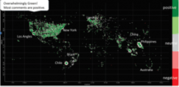
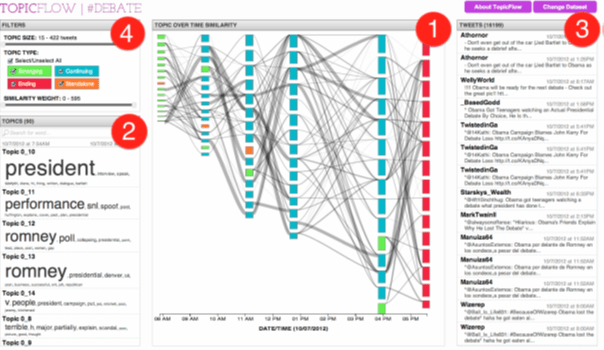
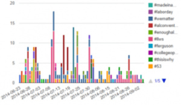
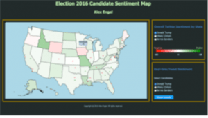
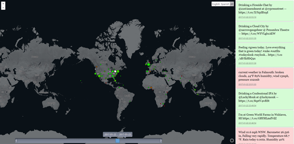
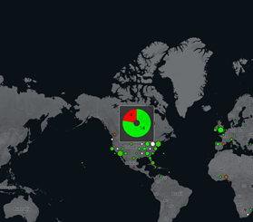
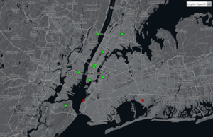

Data publicării: 10.02.2017
Autor articol: Adrian Iftene
Introducere
Datele de pe Twitter au început să constituie date de intrare pentru multe din aplicațiile dezvoltate în ultimii ani. Scopurile acestor aplicații variează de la identificarea emoțiilor utilizatorilor (în legătură cu anumite produse sau companii, în legătură cu candidații la alegeri locale sau prezidențiale, în legătură cu un eveniment, etc.), la identificarea fenomenelor naturale extreme (cutremure, incendii, uragane, etc), la identificarea stării de satisfacție a oamenilor (cu privire la serviciile medicale de care beneficiează, sau cu privire la serviciile oferite de administrația locală, etc.), la identificarea stărilor depresive la anumite persoane sau grupuri de persoane, etc.
Un sistem care procesează datele de pe Twitter are trei module clasice: (1) căutarea și salvarea locală a tweet-urilor (în baze de date sau sub formă de XML sau Json), (2) procesarea datelor salvate (de regulă cu servicii lingvistice, care elimină stop-word-uri, identifică partea de vorbire, identifică entități de tip nume, identifică opiniile pozitive, negative, neutre ale celor, care și le exprimă), (3) afișarea rezultatelor obținute (fie statistici, fie informații distribuite geografic, atunci când e posibil acest lucru). Prezentăm mai jos câteva modalități de vizualizare a rezultatelor obținute în urma procesării.
Metode de vizualizare a informațiilor
Afișarea sentimentelor identificate în prostările de pe Twitter cu ajutorul hărților de tip Google Maps (Hao et al., 2011) (Figura 1 în stânga) e foarte asemănătoare cu afișarea legăturilor de prietenie între utilizatorii de pe Facebook (Ma, 2012) (Figura 1 în dreapta).

În lucrarea (Malik et al., 2013) autorii prezintă sugestiv în mod grafic cu ajutorul aplicației TopicFlow, subiectele cele mai discutate de pe Twitter, folosindu-se și de axa temporală (Figura 2).

Interesante sunt de asemenea alte două abordări: (1) abordarea care folosește hash-tag-urile din tweets pentru a face statistici (Stojanovski et al., 2014) (Figura 3a) și (2) modalitatea de afișare a sentimentelor din postări a lui pe state în US (Engel, 2016) (Figura 3b).


Soluție propusă
Pentru aplicația pe care am dezvoltat-o împreună cu studenții de la master, am folosit ca sursă de date de intrare platforma Twitter. Aceasta oferă în timp real un flux continuu de date, împreună cu detalii legate de locația utilizatorilor care postează aceste informații. Conexiunea între Twitter și aplicația noastră e făcută cu ajutorul unui modul, care primește în mod constant date de la acesta. Datele primite sunt filtrate (în primul rând le păstrăm doar pe cele în engleză sau spaniolă, care au informațiile legate de geolocația utilizatorului, care a făcut postarea) și apoi trimise modului care le adnotează (în funcție de opiniile utilizatorilor, care le-au postat).
Pentru adnotarea cu sentimente am folosit Sentiment140 API, care folosește un model antrenat în special pe tweets (într-o metodă semi-supervizată), pentru a le clasifica. Odată adnotate, ele vor fi trimise către un modul care e responsabil să le distribuie la clienții web conectați. De asemenea, posturile adnotate vor fi stocate pentru a ne permite să facem analize off-line atunci când va fi nevoie. Interfața web pur și simplu preia aceste informații de la modulul care le distribuie și le prezintă utilizatorilor într-un mod grafic.
După cum se poate observa în Figura 4, tweets sunt grupate în clustere, reprezentate de hexagoane, distribuite pe harta globului. Culoarea unui cluster va reprezenta intuitiv ceea ce conține: alb pentru clusterele neutre (care conțin același număr de tweet-uri pozitive și negative sau doar tweet-uri neutre), o culoare între verde și roș (verde reprezentând tweet-uri pozitive și roș tweet-uri negative).

Atunci când un cluster crește, el afectează celelalte clusterele de pe hartă, care se vor micșora proporțional, astfel încât clusterele cele mai mari să fie și cele mai vizibile. Dacă utilizatorul va folosi opțiunea de zoom-in dintr-o anumită regiune (Figura 5 stânga), unde e localizat un cluster mai mare, acesta va fi împărțit în clustere mai mici, până când vom vedea doar clustere compuse dintr-un singur tweet (Figura 5 dreapta).


Pentru a vedea modul de funcționare al aplicației noastre, am lăsat aplicația să funcționeze pe o perioadă mai mare de 24 de ore (între 31 decembrie 2016 și 31 ianuarie 2017). După cum se observă în Figura 4 în partea de jos, avem posibilitatea să selectăm perioada pentru care vrem să vizualizăm informațiile pe hartă, minimul fiind de o zi (în mod implicit se folosește ziua curentă), și maximul fiind de 7 zile (pentru a nu trebui să procesăm o cantitate foarte mare de date).
Concluzii
În activitatea pe care am desfășurat-o am venit cu o nouă propunere de afișare a informațiilor pe Google Maps. Față de abordările anterioare, care afișează toate tweet-urile colectate într-o anumită perioadă, noi putem gestiona perioada pe care afișăm tweet-urile de la 1 zi la 7 zile. Interesant e atunci când folosim perioada de o zi și ne deplasăm de la data cea mai veche, la data cea mai nouă și putem vedea în timp cum evoluează de la o zi la alta postările de pe Twitter pe glob. Pe viitor, ne propunem să găsim o soluție mai eficientă de gestionare a datelor, pentru a putea lucra cu perioade mai mari de 7 zile, având în același timp procesarea în timp real a datelor.
Referințe bibliografice
- Engle, A. (2016) Election 2016 Twitter Sentiment Map. Stanford University. http://web. stanford.edu/class/cs448b/cgi-bin/wiki-sp16/images/5/5f/Alex_Engel_FinalPaper.pdf
- Hao, M., Rohrdantz, C., Janetzko, H., Dayal, U., Keim, D. A., Haug, L. E., Hsu, M. C. (2011) Visual Sentiment Analysis on Twitter Data Streams. In Proceedings of the IEEE Conference on Visual Analytics Science and Technology (VAST), 23-28 Oct. pp. 275-276.
- Ma, D. (2012) Visualization of social media data: mapping changing social networks. Master Thesis, University of Twente. 68 pages.
- Malik, S., Smith, A., Hawes, T., Papadatos, P., Li, J., Dunne, C., Shneiderman, B. (2013) TopicFlow: visualizing topic alignment of Twitter data over time. In Proceedings of the 2013 IEEE/ACM International Conference on Advances in Social Networks Analysis and Mining (ASONAM ’13). ACM, New York, NY, USA, pp. 720-726.
- Stojanovski, D., Dimitrovski, I., Madjarov, G. (2014) TweetViz: Twitter data visualization. Proceedings of the Data Mining and Data Warehouses.
- Wu, X., Bartram, L., Shaw, C. (2016) Plexus: An Interactive Visualization Tool for Analyzing Public Emotions from Twitter Data. CoRR. http://arxiv.org/abs/1701.06270v2